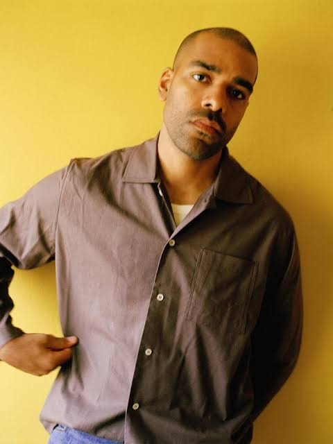
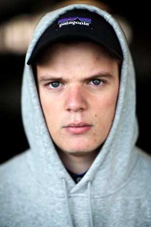

Role: Vocals & Lyrics
Solo Albums: Forevigt, Phillips
Known For: Reflective songwriting and vocals

Role: Producer & Composer
Known For: Film and television soundtracks
Specialty: Atmospheric and experimental production
More than just a musical act, Ukendt Kunstner became the voice of a generation. Their music captured the feelings of young people navigating friendship, ambition, relationships, and city life in modern Denmark. Through thoughtful lyrics and atmospheric production, they created songs that felt both deeply personal and universally relatable.
A defining feature of the duo has always been the contrast between Hans Philip's introspective songwriting and Jens Ole McCoy's innovative production. Together, they developed a sound that blended elements of hip hop, R&B, electronic music, and pop without ever fitting into a single genre. This willingness to experiment helped push Danish urban music in new directions and inspired countless artists who followed.
Despite long periods without releasing music together, their influence has remained remarkably strong. Albums and songs continue to attract new listeners, while older fans often regard their work as the soundtrack to an important chapter of their lives. Few Danish artists have managed to maintain such cultural relevance across multiple generations of listeners.
During their years apart, both members continued to develop their artistic careers in different ways. Hans Philip established himself as one of Denmark's most respected solo artists, releasing critically acclaimed albums that explored themes of identity, relationships, and personal growth. At the same time, Jens Ole McCoy expanded his work as a producer and composer, creating music for films and television while continuing to be recognized for his distinctive sound and production style. Their individual success demonstrated the creative strength of each artist while maintaining the respect and admiration they had earned together as Ukendt Kunstner.
Today, Ukendt Kunstner's legacy extends far beyond record sales and streaming numbers. They are remembered for creating music that captured a specific time and place while still feeling timeless. Whether through nostalgic anthems, reflective ballads, or ambitious new projects, the duo continues to leave a lasting mark on Danish music and culture.